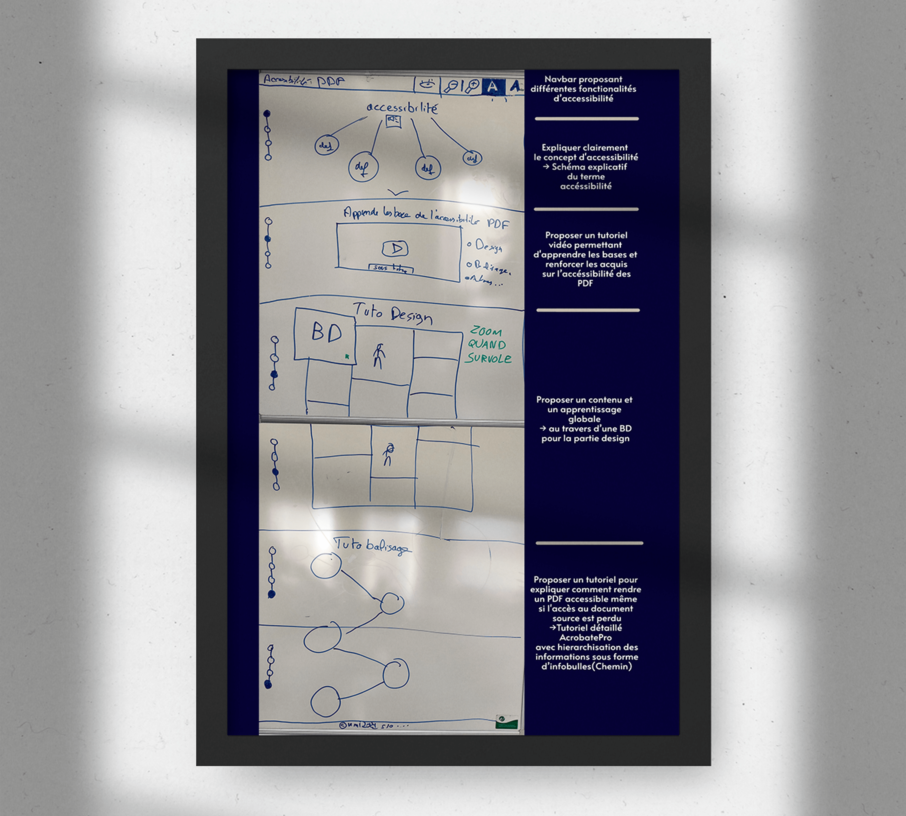

Accessibilité des PDF

Zoning / Wireframe / Maquette


Main dans la main
Ilustration, UX, UI, webCréation d'un site one page qui forment à l'accessibilité PDF. Ce site à était crée avec une démarche d'UX designer au préalable c'est-à-dire qu'il y a eu une analyse de notre cible avec des enquêtes, des interviews et des formulaires remplient par cette cible pour par la suite créer des personas et définir nos objectifs puis un benchmark des sites similaires pour offrir la meilleure expérience à l'utilisateur.
Ensuite, nous avons conçue un zoning puis un wireframe et enfin une maquette tout cela, en fonction de la démarche UX réalisé auparavant.